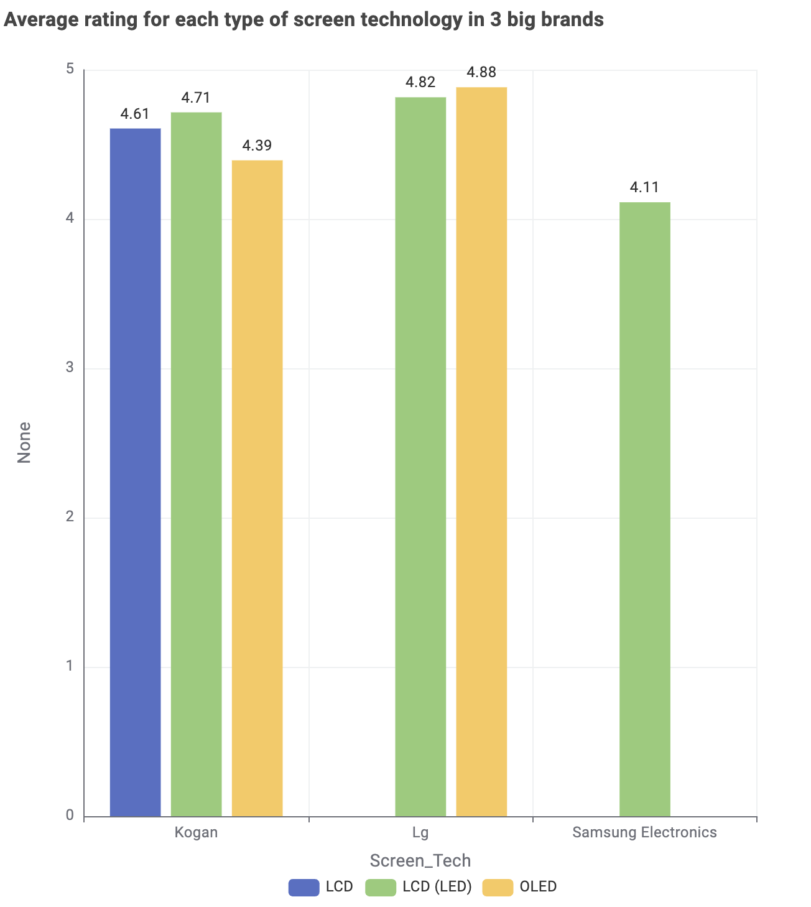
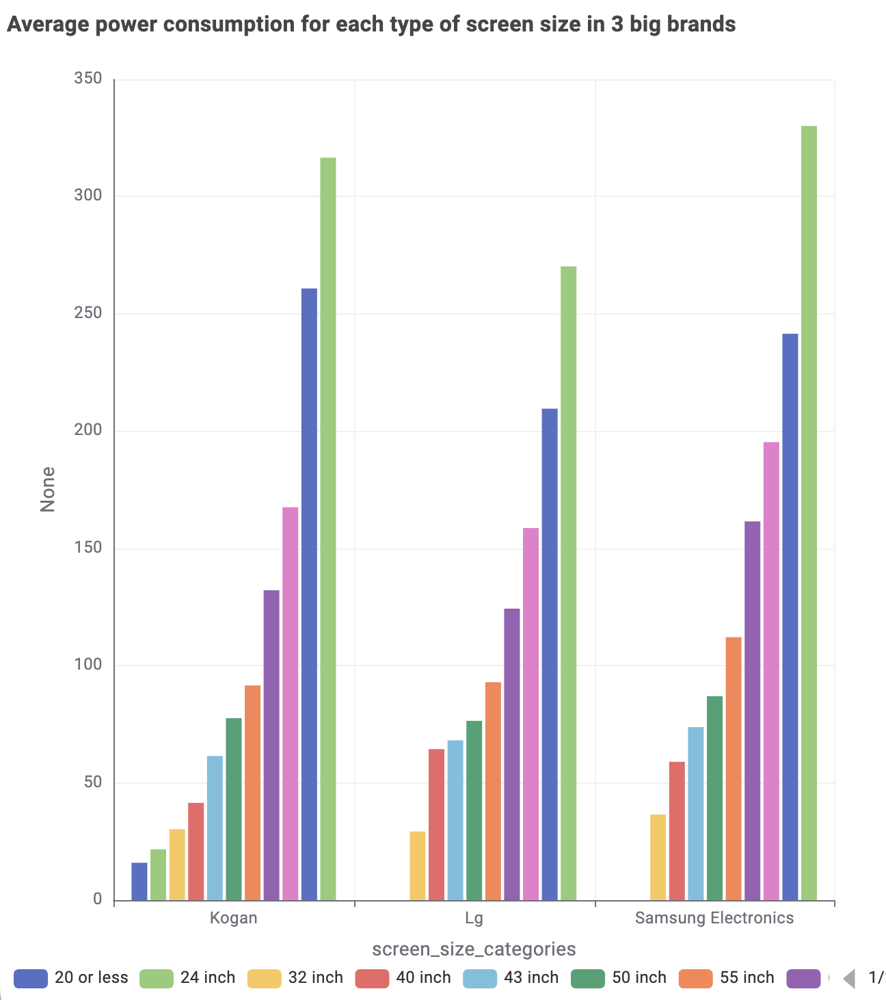

Televisions & Energy Efficiency
Data Insights: Choosing the Right Television
Buying a television can be difficult due to the wide range of brands, screen technologies, and energy consumption levels available on the market. This analysis focuses on helping consumers make informed decisions by comparing the most popular television brands and identifying which options provide the best viewing quality and energy efficiency.
Among the most popular brands, which screen technology provides the best viewing experience?
To ensure fair comparison, the three most popular television brands were first identified based on the number of available models. The average star rating of each screen technology used by these brands was then calculated to determine which technology delivers the highest customer satisfaction.
Among the most popular brands, which brand is the most energy-efficient?
Energy efficiency was evaluated by comparing both screen size and power consumption. A larger screen typically requires more electricity, so an efficiency score was calculated by analysing how much screen size each brand delivers relative to its power usage. This allows a balanced comparison between performance and energy consumption.
Final Recommendation
Takeaway: The best television choice depends on user priorities. Buyers seeking premium viewing quality may focus on screen technology, while environmentally conscious buyers may prioritise energy-efficient brands.